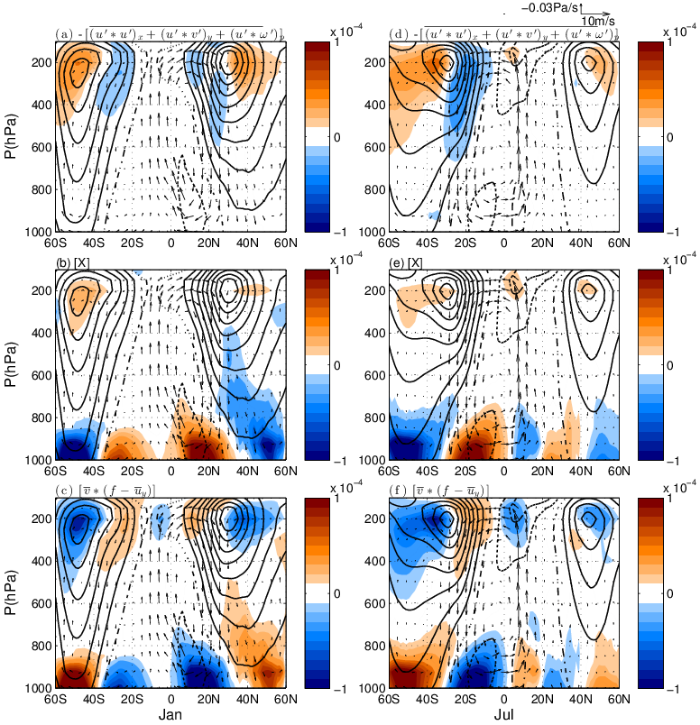

My research is focused on better understanding climate variability and change on broad timescales from sub-seasons to millennia, as well as why the mean climate of the planet is the way it is. Interests are also in the impact of climate variability and change beyond the climate system, e.g. the epidemic dynamics. In particular, I am interested in the moisture component within climate since water is not only important in global energy budget but also greatly influencing the environment of our planet and lives inside.
Geographically, my work covers a wide range of regions from semi-arid land areas to intensive-rainfall oceans in the tropics, and from middle latitudes where the weather is greatly impacted by large scale storms, to the Arctic where the sea ice has been declining significantly in recent decades.
I analyze various sources of large datasets from observations, reanalysis, and output from climate models and also use both complex and idealized climate models to understand the mechanisms behind climate variability, change and impact.
From Yang et al. 2021: Tropical cyclone frequency annual cycle and its predictions by seeds, transition probability and both.
Tropical cyclones are a major natural hazard to life and property. Therefore, understanding TC frequency variability and change in response to climate forcing is not only of fundamental scientific interest but also crucial in practice. Yet it remains a big challenge to connect TC genesis to the background climate, with large uncertainty of projection in the warming world across different climate models.
One drawback of current TC genesis theories is that it focuses the genesis probability change but ignores the variability of seed supply. By examining both observations and simulations from a family of GFDL high-resolution TC-permit climate models (HiRAM, AM2.5 and AM2.5C360), our work suggests that the seeds, or the pre-TC disturbances, are a crucial component to capture the TC sensitivity to climate change. Even in the simplest radiative-forcing signal of annual cycle, the assumption of constant seed supply is problematic, which can only be solved by taking the seeds into account.
The combination of seeds and probability provides a much better representation of TC variability, as well as a new framework to analyze TC frequency variability by assessing contributions from each of the two components, which has a fundamental impact on TC-related research.
From Yang et al. 2019: Response of TC track density to volcanic eruptions with different radiative forcings.
How the climate responds to radiative forcing, particularly to the injection of sulfate aerosols, is an important question. Some of the largest volcanic events over the last century, have released up to 30 Tg (Pinatubo) of sulfate into the global stratosphere. Probing the impacts of these volcanic eruptions offers insights into how these explosive events impact components of the climate system, such as tropical cyclones, El Nino events, and Arctic Sea Ice.
To improve our understanding of how the location of the volcanic eruption influences its climate impact, we use a coupled climate model (FLOR) to investigate the impacts of three eruptions (Pinatubo, Agung, and Santa Maria), which varied in their forcing: The Pinatubo eruption had largest sulfate loading with equal impacts in the Northern and Southern hemispheres, while Agung and Santa Maria had smaller sulfate loading with disproportionate impacts in the Southern and Northern hemispheres, respectively. Results build on previous studies that showed radiative forcing structure, beyond that of aerosol loading, impact global and regional temperature and precipitation.
We illustrate that Agung and Santa Maria (lower aerosol loadings) more strongly impacted Tropical Cyclone Activity and shifted the Tropical Cyclones and Intertropical Convergence Zone away from the hemisphere associated with the aerosol loading. Of the three volcanic eruptions, Pinatubo was by far the largest, with seven times more aerosol loading than Santa Maria, yet due to spatial forcing differences, Santa Maria resulted in the largest climate sensitivities. The majority of current climate models do not accurately reconstruct the spatial structure of volcanic aerosols and therefore the disproportionate impacts of volcanic eruptions on regional scales, which lead to larger scale climate sensitivities as demonstrated by this study, are not represented in model output. This highlights that it is critical to take the spatial structure of volcanic aerosol radiative properties into account when climate models are used to ask questions such as – how have past volcanic eruptions impacted climate, especially when focusing on the hydroclimate and large scale phenomena.
From Baker et al. 2020: Results from global climate-disease model.
A key question for infectious disease dynamics is the impact of the climate on future burden. To evaluate the climate drivers of respiratory syncytial virus (RSV), an important determinant of disease in young children, we combine a dataset of county-level observations from the US with state-level observations from Mexico, spanning much of the global range of climatological conditions. Using a combination of nonlinear epidemic models with statistical techniques, we find consistent patterns of climate drivers at a continental scale explaining latitudinal differences in the dynamics and timing of local epidemics. Strikingly, estimated effects of precipitation and humidity on transmission mirror prior results for influenza. We couple our model with projections for future climate, to show that temperature-driven increases to humidity may lead to a northward shift in the dynamic patterns observed and that the likelihood of severe outbreaks of RSV hinges on projections for extreme rainfall.
During the early stage of the SARS-CoV-2 pandemic, it was unclear whether seasonal and geographic variations in climate can substantially alter the pandemic trajectory, although some evidence suggests that climate may modulate the transmission rate. We used an epidemic model with the transmission coupled to climate condition to simulate the SARS-CoV-2 pandemic by probing different scenarios based on known coronavirus biology. We found that although variations in weather may be important for endemic infections, during the pandemic stage of an emerging pathogen, the climate drives only modest changes to pandemic size. A preliminary analysis of nonpharmaceutical control measures indicates that they may moderate the pandemic-climate interaction through susceptible depletion. Our findings suggested that without effective control measures, strong outbreaks are likely in more humid climates and summer weather will not substantially limit pandemic growth, which has been confirmed in the last summer season.
Using a similar climate dependent epidemic model, we simulated future trajectories of several respiratory infectious diseases including influenza, given that non-pharmaceutical interventions (NPIs) have been employed to reduce the transmission of SARS-CoV-2. As susceptibility increases over the NPI period, we found that substantial outbreaks of these respiratory infectious diseases may occur in future years, with peak outbreaks likely occurring in the winter of 2021--2022. Longer NPIs, in general, lead to larger future outbreaks although they may display complex interactions with baseline seasonality. Results for influenza broadly echo this picture, but are more uncertain. Future outbreaks are likely dependent on the transmissibility and evolutionary dynamics of circulating strains.
From Yang et al. 2017: Lag composites of SIC change rate during extreme moisture transport events in spring.
Moisture transport by the atmospheric circulation is a significant component of the global water cycle and is crucial in determining the distribution of global precipitation and influencing the energy budget. Recent studies suggest that springtime moisture transport into the Arctic can initiate sea ice melt that extends to a large area in the following summer and fall, which can help explain Arctic sea ice interannual variability. Yet the impact from an individual moisture transport event, especially the extreme ones, is unclear on synoptic to intraseasonal time scales.
By applying a lag composite analysis on daily observations and reanalysis data, we demonstrated that extreme moisture transport in to the Arctic can reduce the sea ice concentration over the Greenland-Barents-Kara Seas via enhancing the surface downward thermal radiation. Of these extreme transport days, over 60% are associated with the Blocking weather regime over the North Atlantic. We also revealed that these extreme transport events might be preceded by convective heatings in the tropics by as long as two weeks.
From Yang et al. 2016: Composite SST, Prcp, OLR for dITCZ-nITCZ and sITCZ-nITCZ.
The Inter-Tropical Convergence Zone (ITCZ) is a zonally elongated band of active convection and intensive rainfall, which is the dominant heating source of the atmosphere and highly impacts global atmospheric circulation and climate. The daily ITCZ in the east Pacific is most variable in March--April when it may be located north of equator (nITCZ), south of equator (sITCZ), both sides of equator (dITCZ), or it may be absent (aITCZ). The question is: Is there any relationship between the daily ITCZ categories and the background climate state over the Pacific? In particular, what kind of role does the \nino{}-Southern Oscillation (ENSO) play in the distribution of the daily ITCZ categories?
Using a new dataset of ITCZ categories that are derived from sub-daily satellite images by applying sophisticated machine learning techniques, we performed composite analysis on various climate fields from reanalysis for different ITCZs. We found that the daily ITCZ categories are indeed modulated by the El Nino-La Nina phases, with the dITCZ corresponding to the central Pacific La Nina, a SST anomaly pattern similar to the traditional La Nina but with cool SST anomalies centered around the central Pacific (in stead of the east Pacific).
From Yang et al. 2014: East African March-May rainfall decadal variability and its relationship with global SSTs.
East Africa, the greater coastal region of the tropical western Indian Ocean, has a dry annual mean climatology and two rainy seasons with the major one during March--May (often called the "long rains") and the second one during October--December (the "short rains"). Nearly half economy in this region is from agriculture, which is mainly rain-fed and highly vulnerable to climate variability and change. In addition, it is an interesting region in terms of climate science: much drier than other deep tropical land areas of the same latitude and a rainfall seasonal cycle being out of phase with that of the famous neighbor--the Asian monsoon (which has a single peak of rainfall in Summer). Therefore, the study of hydroclimate in East Africa is not only important in practice but also crucial in better understanding our climate system.
In recent decades, East Africa has been undergoing increased frequency and intensity of droughts, threatening lives of millions of people in this hydrologically and politically vulnerable region. This trend is mainly due to the declining of the long rains. Recent studies demonstrated that the long rains declining is associated with a La Nina-like pattern of sea surface temperature trend over the Pacific Ocean, yet whether it arises from natural climate variability or anthropogenic forcing is still in debate.
To understand the declining trend, we examined the East African long rains using a century-long observations and climate model outputs. We revealed that the recent drying trend in East Africa is mainly attributed to the natural variability of the long rains on decadal or longer time scales. The driver of this variability is the sea surface temperature anomaly over the Pacific Ocean, with the La Nina-like pattern corresponding to the dry phase of the long rains.
We also addressed the fundamental issue of why East Africa is dry and proposed that it can be attributed to the cool air ventilated from the western Indian Ocean, where the sea surface temperature (SST) is low. However, we noticed that most state-of-the-art climate models tend to have a systematic bias in simulating the Indian Ocean SST, which leads to underestimating the long rains while overestimating the short rains in East Africa. This casts large uncertainty to the projection of future hydroclimate in this region.

From Yang et al. 2013: Zonal mean zonal momentum balance in January and July.
Due to the self rotation of the Earth, the three-dimensional atmospheric circulation is actually dominated by the zonal (east-west) component, therefore an accurate analysis of the zonal momentum budget is crucial in understanding how the atmospheric circulation works, and a good representation of zonal momentum dynamics is important in climate modeling. By analyzing the zonal momentum budget from the reanalysis, a quasi-observational dataset, we found the zonal-mean equatorial upper-troposphere easterlies are maintained by the advection of the absolute angular momentum associated with the cross-equatorial Hadley circulation. However, the pressure gradient force also plays an important role in regional longitudes, e.g. the Asian monsoon region.